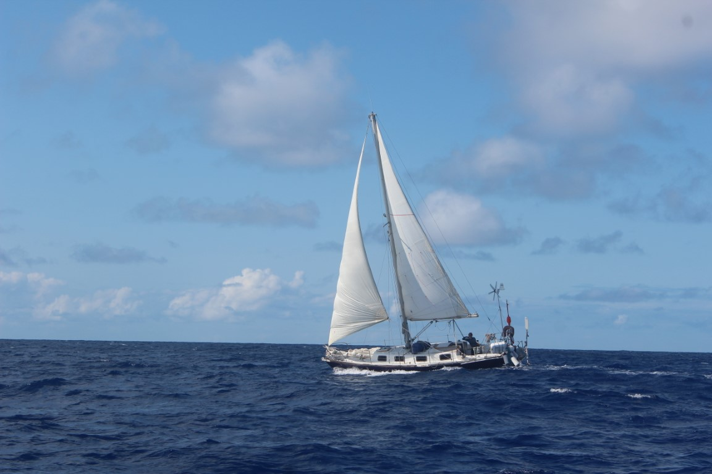

<div style="height: 600px; overflow-y: scroll;">
    <div class="tab" style="margin-top: 30px; margin-bottom: 10px; display: grid; grid-template-columns: auto auto auto auto auto auto auto auto auto auto auto;"> <!-- TODO Improve the grid-template... -->
        <button class="tablinks tab-active" onclick="openTab(event, 'passpartout-01');" title="Sommaire">Sommaire</button>
        <button class="tablinks" onclick="openTab(event, 'passpartout-02');">Photos</button>
        <button class="tablinks" onclick="openTab(event, 'passpartout-03');">Contact</button>
    </div>

    <div style="height: 500px; overflow-y: scroll;">
        <div id="passpartout-01" class="tab-section" style="display: block;">
            <div style="display: grid; grid-template-columns: auto auto;">
                
                <div style="padding: 14px;">
                    <h2>Passpartout</h2>
                    Sloop construit en acier en 1980.<br/>  
                    Constructeur Ren&eacute; PORHIEL, Lorient
                </div>
            </div>
            <div>
                <h2>Le Bateau</h2>
                <div>
                    <ul>
                        <li>Longueur  8,75 m</li>
                        <li>Largeur  3,05 m</li>
                        <li>Tirant d'eau 1,40 m</li>
                        <li>&eacute;quip&eacute; d'un moteur hors bord essence, Honda, 9,9 cv</li>
                    </ul>
                    Le bateau a &eacute;t&eacute; l&eacute;gu&eacute; &agrave; l'association "Voyage en Patrimoine" en D&eacute;cembre 2022, 
                    mais Passe&#8209;Coque reste solidaire du projet.
                </div>
            </div>
        </div>

        <div id="passpartout-02" class="tab-section" style="display: none; background: black; padding-top: 10px;">
            <slide-show id="passpartout-slide-show"
                        width="780"
                        height="400"
                        style="line-height: 1em;">
                <slide-show-image src="./images/boats/passpartout/passpartout.1.jpg" title="Passpartout - 1"></slide-show-image>
                <slide-show-image src="./images/boats/passpartout/passpartout.2.jpg" title="Passpartout - 2"></slide-show-image>
                <slide-show-image src="./images/boats/passpartout/passpartout.3.jpg" title="Passpartout - 3"></slide-show-image>
                <slide-show-image src="./images/boats/passpartout/passpartout.4.jpg" title="Passpartout - 4"></slide-show-image>
                <slide-show-image src="./images/boats/passpartout/passpartout.5.jpg" title="Passpartout - 5"></slide-show-image>
                <slide-show-image src="./images/boats/passpartout/passpartout.6.jpg" title="Passpartout - 6"></slide-show-image>
            </slide-show>
        </div>

        <div id="passpartout-03" class="tab-section" style="display: none;">
            <h2>Plus d'infos...</h2>
            R&eacute;f&eacute;rents et porteurs du projet : Marine Prevet et Wencelas Gasse</br/>
            Email : contact@voyageenpatrimoine.fr<br/>
            Site web : <a href="https://voyageenpatrimoine.fr" target="ext">https://voyageenpatrimoine.fr</a>
        </div>
    </div>
</div>